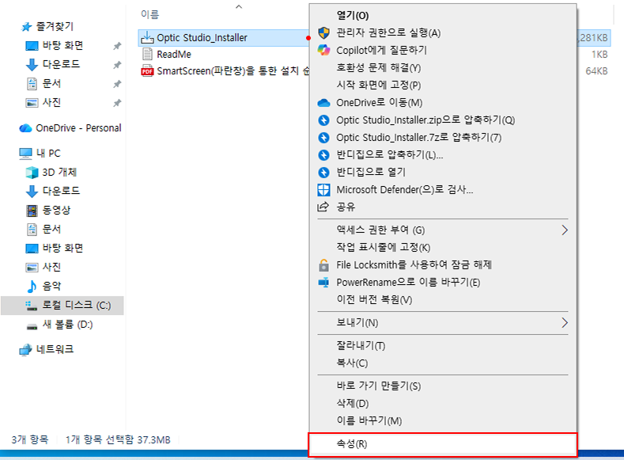
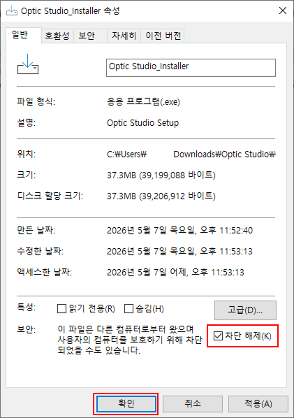

Tokai Studio
안경원 상담을 위한 시야 체험 및 렌즈 상담 프로그램입니다. 아래 버튼을 눌러 Windows용 설치파일을 다운로드할 수 있습니다.
설치 방법
다운로드한 설치파일의 속성에서 차단 해제 항목이 표시되는 경우, 체크한 뒤 설치를 진행해주세요. 차단 해제 항목이 없다면 바로 설치해도 됩니다.
위의 Tokai Studio 설치파일 다운로드 버튼을 눌러 설치파일을 다운로드합니다.
다운로드한 설치파일을 우클릭하고 속성을 선택합니다.

우클릭 메뉴 하단의 속성을 선택합니다.
속성 창 하단의 보안 항목에서 차단 해제를 체크한 후 확인을 누릅니다.

차단 해제를 체크한 뒤 확인을 누릅니다.
설치파일을 실행하여 Tokai Studio를 설치합니다.
설치가 완료되면 Tokai Studio를 실행합니다.
필수 업데이트가 있는 경우 프로그램 실행 과정에서 자동으로 업데이트가 진행됩니다.
업데이트 안내
필수 업데이트가 있는 경우 자동으로 업데이트가 진행됩니다.
그 외 업데이트는 Tokai Studio의 설정 → 업데이트에서 직접 확인하고 진행할 수 있습니다.
지원 환경
- Windows 10
- Windows 11
- 64-bit